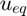
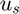
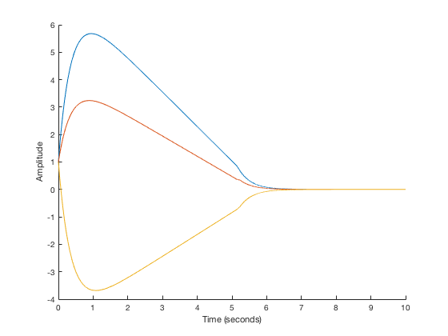
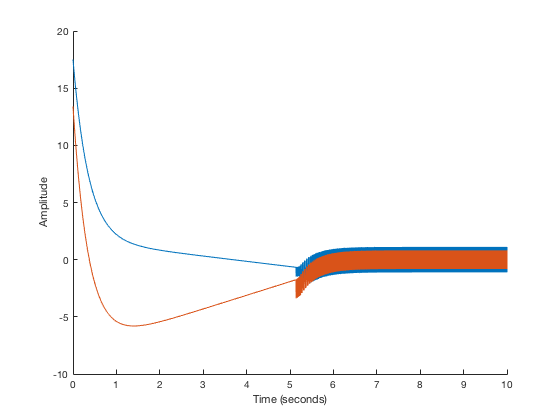
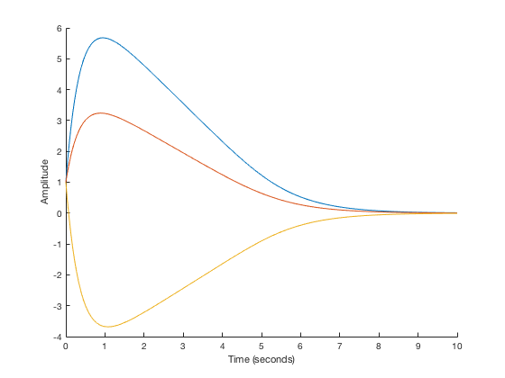
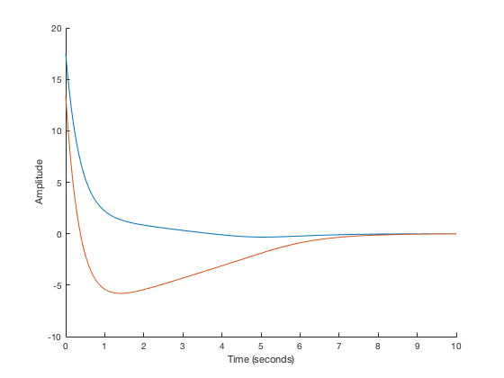

Sliding Mode Control Example
Example showing sliding mode control for a MIMO system.
Contents
Define the State-Space Model
Define the state-space model for the system.
A = [1 1 1; 0 1 3; 1 0 1]; B = [0 1; 1 -1; -1 0]; syms x1 x2 x3 u1 u2 sys = symss; sys.states = [x1, x2, x3]; sys.inputs = [u1, u2]; sys.f = A*sys.states + B*sys.inputs; sys.g(1) = 0;
Compute a Sliding Surface
Compute a sliding control using the slide and slidectrl functions.
slide computes a sliding surface for the system using quadratic minimization techniques. In this case, use Q = diag[1, 2, 3] for the quadratic cost matrix.
Q = diag([1, 2, 3]); S = slide(sys, Q);
slidectrl computes the control input using the equivalent control  and the control to reach the sliding surface .
uSM = slidectrl(sys, S);
Simulate the Output
Simulate the output for the system using nlsim.
tspan = [0 10];
ic = {[1, 1, 1]};
figure
nlsim(sys, uSM, tspan, ic);
 Plot the Control Effort
Plot the control effort for the system using effort.
figure effort(sys, uSM, tspan, ic);
Simulate the Output Using Continuous Switching
uSM = slidectrl(sys, S, 'SwitchingFunction', @tanh);
figure
nlsim(sys, uSM, tspan, ic);
figure
effort(sys, uSM, tspan, ic);
 